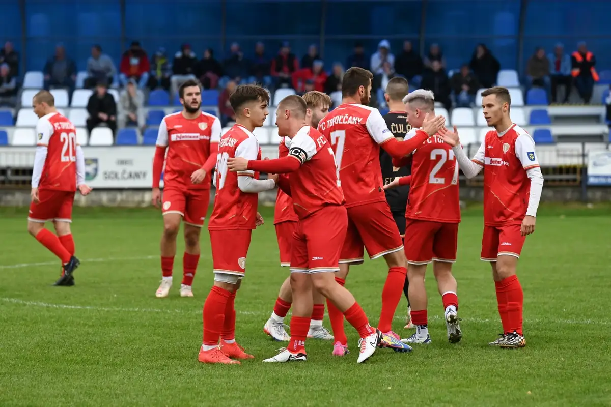
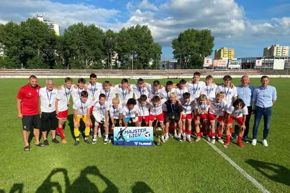

Posledný zápasA-mužstvo
 FC Topoľčanydomáci
FC TopoľčanydomáciVýsledok 2:3
 AFC Nové Mesto nad Váhomhostia
AFC Nové Mesto nad VáhomhostiaPrehrapolčas 1:1
Návrh webu · nie je to oficiálna stránka klubu

Topoľčany · futbal od roku 1912
FC Topoľčany vznikol v roku 2020, aby nadviazal na storočnú históriu futbalu v meste. Áčko hrá IV. ligu, žiaci U15, U14, U13, U12 hrajú I. ligu proti Slovanu, Trnave či DAC.
Posledný zápasA-mužstvo
FC TopoľčanydomáciVýsledok 2:3
AFC Nové Mesto nad VáhomhostiaPrehrapolčas 1:1
Posledný zápasU19 Starší dorast
FC Topoľčany U19domáciVýsledok 2:0
 MFC SPARTAK Bánovce nad Bebravouhostia
MFC SPARTAK Bánovce nad BebravouhostiaVýhrapolčas 1:0
Posledný zápasU17 Mladší dorast
FC Topoľčany U17domáciVýsledok 2:3
MFC SPARTAK Bánovce nad BebravouhostiaPrehrapolčas 2:0
Posledný zápasU15 Starší žiaci
FC Topoľčany U15domáciVýsledok 2:0
 MFK Skalicahostia
MFK SkalicahostiaVýhrapolčas 2:0
Posledný zápasU14 Starší žiaci
FC Topoľčany U14domáciVýsledok 3:4
MFK SkalicahostiaPrehrapolčas 0:0
Posledný zápasU13 A Mladší žiaci
MFK SkalicadomáciFC Topoľčany U13 AhostiaVýsledky prípraviek sa nezapisujú
Posledný zápasU13 B Mladší žiaci
FC Topoľčany U13 BdomáciVýsledok 6:3
 OFK obce Prašicehostia
OFK obce PrašicehostiaVýhrapolčas 4:2
Posledný zápasU12 Mladší žiaci
MFK SkalicadomáciFC Topoľčany U12hostiaVýsledky prípraviek sa nezapisujú
Posledný zápasU11 A Prípravka
FC Topoľčany U11 AdomáciMFC SPARTAK Bánovce nad BebravouhostiaVýsledky prípraviek sa nezapisujú
Posledný zápasU11 B Prípravka
 TJ Nemčicedomáci
TJ NemčicedomáciVýsledok 7:6
FC Topoľčany U11 BhostiaPrehrapolčas 5:4
Posledný zápasU10 Prípravka
FC Topoľčany U10domáciMFC SPARTAK Bánovce nad BebravouhostiaVýsledky prípraviek sa nezapisujú
Posledný zápasU9 A Prípravka
FC Topoľčany U9 AdomáciMFC SPARTAK Bánovce nad BebravouhostiaVýsledky prípraviek sa nezapisujú
Posledný zápasU9 B Prípravka
FC Topoľčany U9 Bdomáci OFK Tovarníkyhostia
OFK TovarníkyhostiaVýsledky prípraviek sa nezapisujú
Zimná prestávka. Mládež začína jar v sobotu 27. februára 2027, áčko v sobotu 6. marca 2027 vonku na ihrisku FC Nitra B.
| # | Tím | Z | V | R | P | Skóre | B |
|---|---|---|---|---|---|---|---|
| 10 | 15 | 6 | 1 | 8 | 26:28 | 19 | |
| 11 | 15 | 5 | 4 | 6 | 22:19 | 19 | |
| 12 | 15 | 5 | 3 | 7 | 19:26 | 18 | |
| 13 | 15 | 5 | 2 | 8 | 19:25 | 17 | |
| 14 | 15 | 3 | 3 | 9 | 12:29 | 12 |
12.miesto zo 16 po 15 zápasoch, 5 výhier, 3 remízy, 7 prehier, skóre 19:26
Vitrína mládeže
Po vzniku v roku 2020 sa klub zameral na výchovu mládeže. Od sezóny 2021/22 vyhrali mládežnícke tímy FC Topoľčany 7 súťaží Západoslovenského futbalového zväzu.

Zdroj: články na webe klubu (sezóny 2021/22 až 2023/24). Mládež a nábor
Podľa klubu v ňom hrá viac ako 250 mládežníkov z Topoľčian a okolia. 4 žiacke tímy hrajú I. ligu v skupine Západ, prípravky sa stretávajú s akadémiami Trnavy či Trenčína.
Nábor
Predprípravka je pre deti od 4 do 6 rokov. Zavolajte alebo napíšte a dohodnite si tréning či skúšku.

Nápis zo steny na Štadióne Vojtecha Schotterta. V areáli je hlavné ihrisko s tribúnou, vedľajšia plocha a umelá tráva s novou tribúnou.


Od roku 1912
Topoľčiansky futbal má za sebou viac ako sto rokov. Po rokoch problémov predošlých klubov vznikol v roku 2020 FC Topoľčany s cieľom byť ekonomicky stabilný, transparentný a férový voči partnerom a stavať na vlastnej mládeži.
Zoznam podľa webu klubu. Projekt „Bezpečná doprava a kvalitnejší tréningový proces pre našich hráčov“ podporil Nitriansky samosprávny kraj dotáciou.